Manual de Usuario
Sistema de Gestión de Stock
Municipalidad de Mercedes
Administración de insumos, maquinarias, vehículos
y recursos de los corralones municipales
Versión 1.0 — Mayo 2026
Uso interno
1. Introducción
El Sistema de Gestión de Stock es una aplicación web desarrollada para la Municipalidad de Mercedes que permite administrar los recursos de los corralones municipales de forma centralizada.
Qué puede hacer con este sistema
- Gestionar insumos — materiales, repuestos y consumibles con control de stock automático.
- Administrar maquinarias — equipos y herramientas con seguimiento de disponibilidad.
- Controlar vehículos — flota vehicular con documentación, vencimientos de VTV y pólizas.
- Registrar choferes — conductores con licencias, categorías y vehículos asignados.
- Gestionar empleados y eventos — personal y actividades programadas.
- Registrar movimientos — entradas, salidas, transferencias y asignaciones de insumos y maquinarias entre depósitos, vehículos, eventos y empleados.
Conceptos clave
| Concepto | Descripción |
|---|
| Corralón | Sede o ubicación física municipal (ej: Corralón Central, Corralón Norte). |
| Depósito | Subdivisión dentro de un corralón. Los insumos, maquinarias y vehículos se almacenan en depósitos. |
| Movimiento | Operación que modifica el stock: entrada, salida, transferencia o asignación. |
| Transferencia | Movimiento de uno o más ítems entre depósitos (puede ser entre corralones distintos). |
| Asignación | Entrega de insumos o maquinarias a un vehículo, evento o empleado. |
2. Ingreso al Sistema
Pantalla de Login
Al acceder al sistema se presenta la pantalla de inicio de sesión. En el lado izquierdo se muestra información institucional y en el derecho el formulario de ingreso.
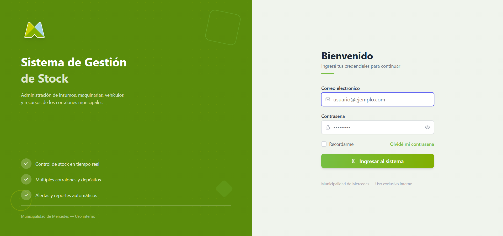
Pasos para ingresar
- Ingrese su correo electrónico en el campo correspondiente.
- Ingrese su contraseña. Puede usar el ícono del ojo para ver/ocultar la contraseña.
- (Opcional) Marque la casilla "Recordarme" para mantener la sesión activa.
- Haga clic en el botón "Ingresar al sistema".
Si las credenciales son correctas, será redirigido al Dashboard. Si son incorrectas, se mostrará un mensaje de error debajo del formulario.
Nota: Si olvidó su contraseña, contacte al administrador del sistema para que la restablezca.
Cerrar sesión
Para cerrar sesión, haga clic en el botón rojo de logout ubicado en la parte inferior del menú lateral (sidebar), junto a su nombre y correo electrónico.
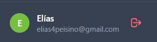
3. Navegación General
Menú lateral (Sidebar)
El menú lateral izquierdo es la forma principal de navegar entre las secciones del sistema. Está organizado en tres áreas:
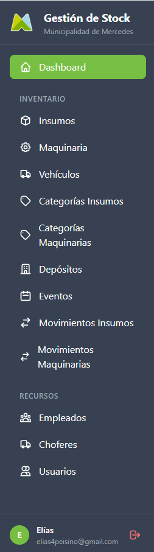
| Sección | Módulos incluidos |
|---|
| Dashboard |
Pantalla principal con resúmenes y alertas (siempre visible) |
| INVENTARIO |
Insumos, Maquinaria, Vehículos, Categorías Insumos, Categorías Maquinarias, Depósitos, Eventos, Movimientos Insumos, Movimientos Maquinarias |
| RECURSOS |
Empleados, Choferes, Usuarios |
El enlace de la sección activa se resalta con fondo verde. Solo se muestran las secciones a las que usted tiene acceso según sus permisos asignados.
Navegación en dispositivos móviles
En pantallas pequeñas (celulares, tablets), el menú lateral se oculta automáticamente. Use el botón de menú hamburguesa (tres líneas horizontales) en la esquina superior izquierda para abrirlo.
Elementos comunes en todas las pantallas
La mayoría de las pantallas comparten estos elementos:
| Elemento | Descripción |
|---|
| Barra de búsqueda | Campo de texto para filtrar registros por nombre u otros campos. Filtra en tiempo real mientras escribe. |
| Botón "Filtros" | Abre un panel desplegable con filtros avanzados. Muestra un número indicando cuántos filtros están activos. |
| Botón "Nuevo..." | Abre el formulario para crear un nuevo registro. Solo visible si tiene permisos de edición. |
| Tabla de datos | Lista paginada (10 registros por página). Navegue entre páginas con los botones al pie de la tabla. |
| Acciones por fila | Botón de editar (azul, ícono de lápiz) y eliminar (rojo, ícono de papelera) en cada registro. |
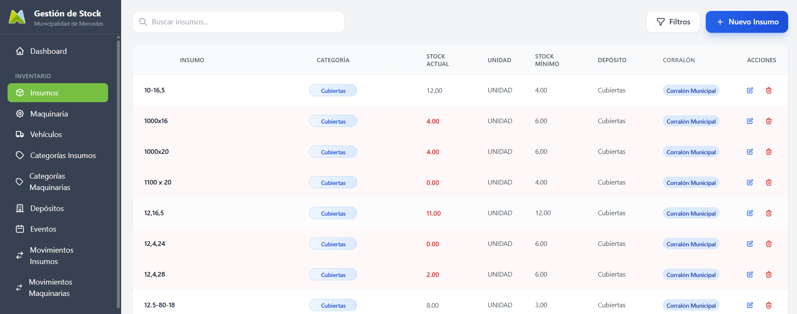
4. Dashboard
El Dashboard es la pantalla principal del sistema. Muestra un resumen general del estado de los recursos y alertas importantes que requieren atención.
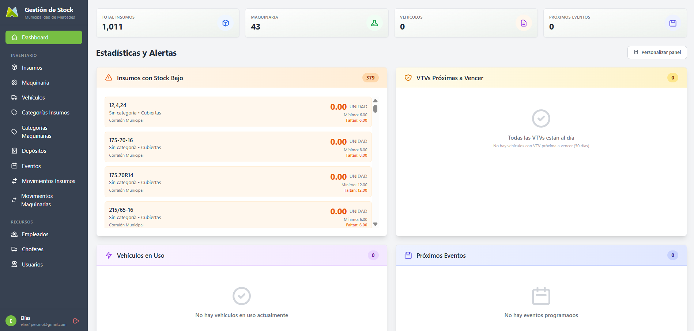
Tarjetas de resumen
En la parte superior se muestran hasta 4 tarjetas con contadores rápidos:
| Tarjeta | Ícono | Descripción |
|---|
| Total Insumos | Azul | Cantidad total de insumos registrados en el sistema |
| Maquinaria | Verde | Cantidad total de maquinarias registradas |
| Vehículos | Violeta | Cantidad total de vehículos en la flota |
| Próximos Eventos | Índigo | Cantidad de eventos próximos programados |
Widgets de alertas
Insumos con Stock Bajo
Muestra los insumos cuyo stock actual está por debajo del stock mínimo configurado. Cada fila indica el nombre del insumo, categoría, depósito, corralón, stock actual (en naranja), stock mínimo y cuántas unidades faltan.
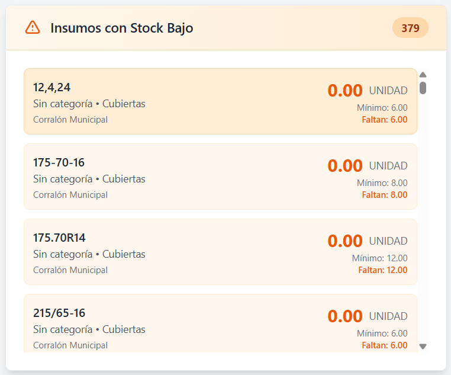
VTVs Próximas a Vencer
Lista los vehículos cuya Verificación Técnica Vehicular está por vencer o ya venció. Los colores indican la urgencia:
- Rojo — VTV ya vencida
- Naranja — Vence en los próximos 7 días
- Amarillo — Vence en los próximos 30 días
Vehículos en Uso
Muestra los vehículos que actualmente están en estado "En Uso", con su número de patrimonio, descripción, marca/modelo, patente y ubicación.
Próximos Eventos
Lista los eventos programados más cercanos con su fecha, ubicación y secretaría organizadora.
Personalizar el Dashboard
- Haga clic en "Personalizar panel" (esquina superior derecha).
- Se abrirá una ventana con casillas de verificación para cada tarjeta y widget.
- Active o desactive los elementos que desee ver.
- Haga clic en "Guardar".
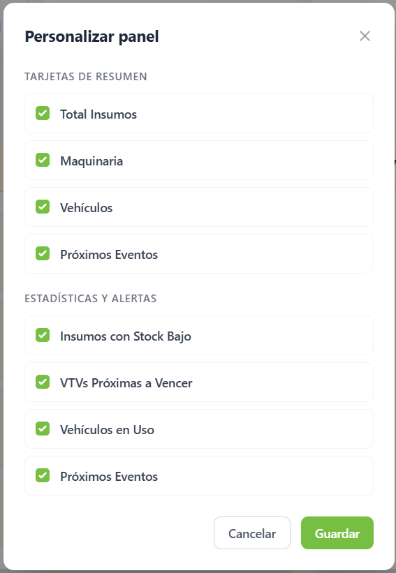
Consejo: Sus preferencias de personalización se guardan automáticamente y se mantendrán en futuras sesiones.
5. Insumos
La sección de Insumos permite gestionar todos los materiales, repuestos y consumibles del inventario de los corralones.
Ver insumos
Al ingresar se muestra una tabla con todos los insumos a los que tiene acceso:
| Columna | Descripción |
|---|
| Insumo | Nombre del insumo |
| Categoría | Categoría (etiqueta azul) |
| Stock Actual | Cantidad en stock. Se muestra en rojo si está por debajo del mínimo |
| Unidad | Unidad de medida (Unidad, Litros, Metro, Tambor, etc.) |
| Stock Mínimo | Cantidad mínima deseada para alertas |
| Depósito | Depósito donde se almacena |
| Corralón | Corralón al que pertenece (etiqueta azul) |
Atención: Los insumos con stock por debajo del mínimo se resaltan con fondo rojo claro para facilitar su identificación rápida.

Filtrar insumos
Puede buscar y filtrar insumos de varias formas:
- Búsqueda rápida: Escriba en el campo "Buscar insumos..." para filtrar por nombre en tiempo real.
- Filtros avanzados: Haga clic en el botón "Filtros" para desplegar el panel con:
- Categoría: Filtra por categoría de insumo.
- Unidad de Medida: Filtra por tipo de unidad.
- Depósito: Filtra por depósito.
- Solo stock bajo mínimo: Muestra únicamente los insumos con stock bajo.
Para quitar todos los filtros, haga clic en "Limpiar filtros".
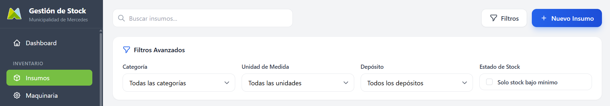
Crear un insumo
- Haga clic en "Nuevo Insumo" (botón azul, esquina superior derecha).
- Complete el formulario:
- Insumo (obligatorio): Nombre descriptivo del material.
- Categoría (obligatorio): Seleccione de la lista desplegable.
- Unidad (obligatorio): Unidad de medida (Unidad, Litros, Tambor, Metro, Rollo x 100 mt, Paquete, Bolsa, Balde).
- Stock Inicial (opcional): Cantidad inicial. Si se ingresa un valor, se genera automáticamente un movimiento de inventario inicial.
- Stock Mínimo (obligatorio): Cantidad mínima para generar alertas.
- Depósito (obligatorio): Seleccione el depósito donde se almacenará.
- Haga clic en "Crear".
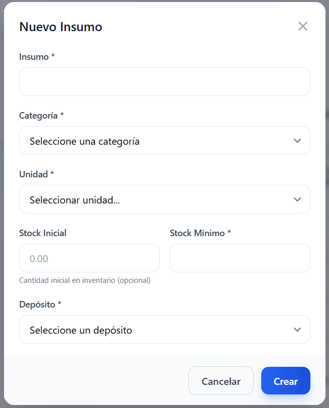
Editar un insumo
- Haga clic en el botón editar (ícono de lápiz azul) en la fila del insumo.
- Modifique los campos necesarios. El stock actual se muestra como solo lectura.
- Haga clic en "Actualizar".
Eliminar un insumo
- Haga clic en el botón eliminar (ícono de papelera rojo) en la fila del insumo.
- Confirme la eliminación en el diálogo que aparece.
Importante: El stock de los insumos no se modifica editando el insumo directamente. Para agregar o quitar stock, utilice la sección Movimientos de Insumos (sección 13).
6. Maquinarias
Permite gestionar los equipos y maquinarias de los corralones municipales.
Ver maquinarias
| Columna | Descripción |
|---|
| Maquinaria | Nombre del equipo |
| Categoría | Categoría (etiqueta azul) |
| Cantidad | Verde si hay stock, rojo si es 0 |
| Estado | Disponible o No Disponible |
| Depósito | Depósito asignado |
| Corralón | Corralón (etiqueta azul) |
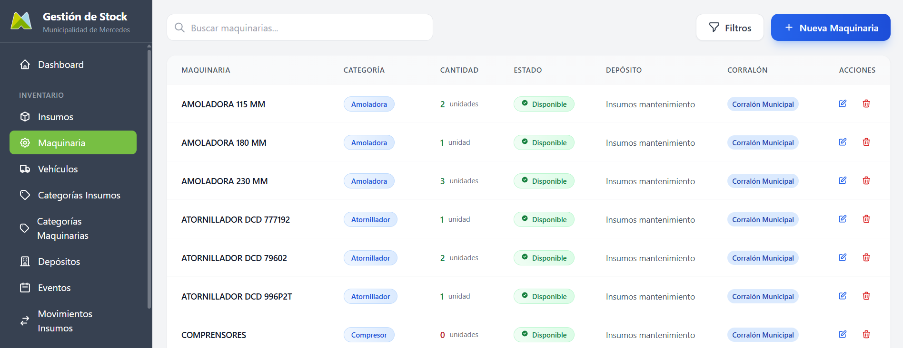
Filtrar maquinarias
- Búsqueda rápida: Campo "Buscar maquinarias..."
- Filtros avanzados: Categoría, Estado (Disponible / No Disponible), Depósito.
Crear una maquinaria
- Haga clic en "Nueva Maquinaria".
- Complete el formulario:
- Maquinaria (obligatorio): Nombre del equipo.
- Categoría (obligatorio): Seleccione de la lista.
- Cantidad (obligatorio): Cantidad total de unidades.
- Estado (obligatorio): Disponible o No Disponible.
- Corralón (obligatorio): Al seleccionar un corralón, se habilita el campo Depósito.
- Depósito (obligatorio): Seleccione el depósito dentro del corralón elegido.
- Haga clic en "Crear".
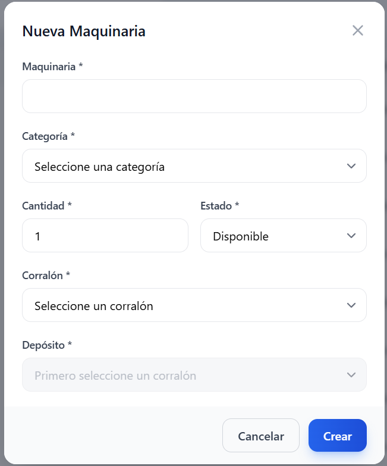
Editar una maquinaria
Al editar, el campo Cantidad aparece como solo lectura (con ícono de candado). La cantidad se modifica a través de movimientos de maquinaria.
Nota: La cantidad disponible se calcula descontando las unidades actualmente en uso (asignadas y no devueltas). Para mover o asignar maquinarias, use la sección Movimientos de Maquinarias (sección 14).
7. Vehículos
Gestiona la flota vehicular de los corralones, incluyendo documentación, vencimientos de VTV y pólizas de seguro.
Ver vehículos
| Columna | Descripción |
|---|
| Nro. Patrimonio | Número de patrimonio del vehículo |
| Vehículo | Descripción del vehículo |
| Patente | Patente/matrícula |
| Estado | Estado actual (ver tabla de estados abajo) |
| Corralón | Corralón asignado (etiqueta azul) |
| Venc. VTV | Fecha de vencimiento de la VTV |
| Documentos | Botón con cantidad de documentos adjuntos |
Estados de vehículos
| Estado | Color | Significado |
|---|
| Disponible | Verde | Listo para usar |
| En Uso | Azul | Actualmente en circulación |
| Mantenimiento | Amarillo | En reparación o servicio |
| Fuera de Servicio | Rojo | No operativo |
📸
Captura de pantalla
Tabla de vehículos mostrando filas con distintos estados y el botón de documentos
Crear un vehículo
El formulario de vehículo está organizado en secciones:
- Haga clic en "Nuevo Vehículo".
- Complete las secciones del formulario:
Información Básica
- Nro. Patrimonio: Número de patrimonio.
- Vehículo (obligatorio): Descripción del vehículo.
- Marca/Modelo (obligatorio): Marca y modelo.
- Año: Año de fabricación.
- Patente: Número de patente.
- Tipo de Combustible: Nafta, Diésel o Gas.
- Vencimiento Oblea: Solo aparece si seleccionó Gas como combustible.
Identificación Técnica
Seguro y Vencimientos
- Nro. Póliza: Número de póliza de seguro.
- Vencimiento Póliza: Fecha de vencimiento del seguro.
- Vencimiento VTV: Fecha de vencimiento de la verificación técnica.
Origen y Telepase
- Origen, Jurisdicción de Procedencia, Nro. Telepase
Estado y Ubicación
- Estado (obligatorio): Seleccione el estado del vehículo.
- Depósito (obligatorio): Seleccione el depósito.
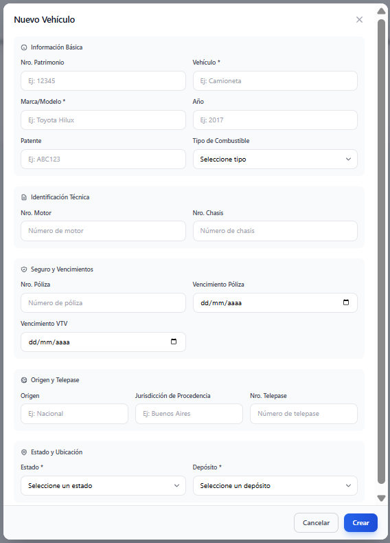
Documentos de un vehículo
Cada vehículo puede tener documentos adjuntos (seguros, títulos, permisos, etc.):
- En la tabla de vehículos, haga clic en el botón de documentos (ícono de documento con número) de la fila correspondiente.
- Se abre una ventana que muestra los documentos existentes.
- Si tiene permisos de edición, puede agregar nuevos documentos con una descripción.
- Use los botones de ver (abre en el navegador) o descargar para acceder a cada documento.
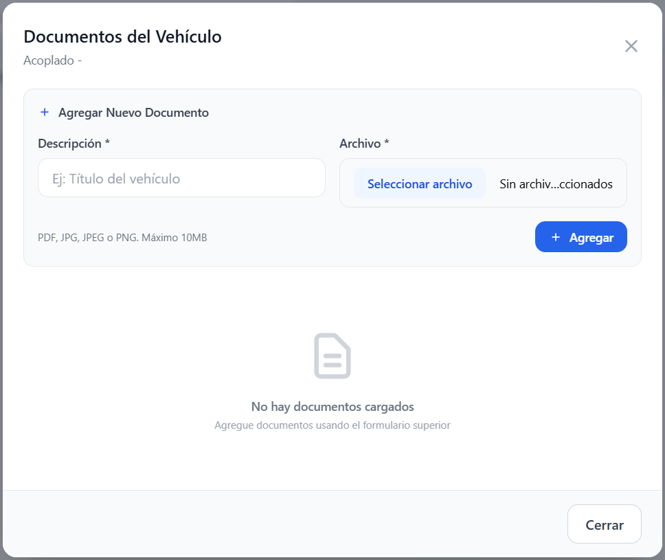
8. Choferes
Gestiona los conductores de la flota vehicular, incluyendo sus licencias, categorías habilitantes y vehículos asignados.
Ver choferes
| Columna | Descripción |
|---|
| Legajo | Número de empleado (etiqueta azul) |
| Nombre | Nombre completo del chofer |
| DNI | Documento de identidad |
| Licencia | Tipo de licencia (Profesional o Común) |
| Venc. Licencia | Fecha de vencimiento. Rojo si venció, amarillo si vence en 30 días |
| Área | Área de trabajo |
| Vehículos | Vehículos asignados (etiquetas verdes con patente). "Sin asignar" si no tiene |
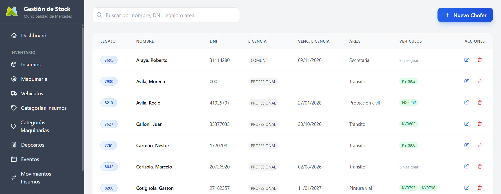
Crear / Editar un chofer
- Haga clic en "Nuevo Chofer" o en el botón editar de la fila.
- Complete los datos personales:
- Nombre y Apellido (obligatorio)
- DNI (obligatorio)
- N° Empleado (obligatorio)
- Tipo de Licencia: Profesional o Común
- Vencimiento Licencia: Fecha
- Categorías: Categorías habilitantes (ej: "A.1.4 B.2 D.1")
- Área, Domicilio, Secretaría
- Asignar vehículos: En la parte inferior del formulario hay una lista de vehículos con casillas de verificación. Puede buscar por patente o patrimonio. Marque los vehículos que desea asignar.
- Haga clic en "Crear" o "Actualizar".
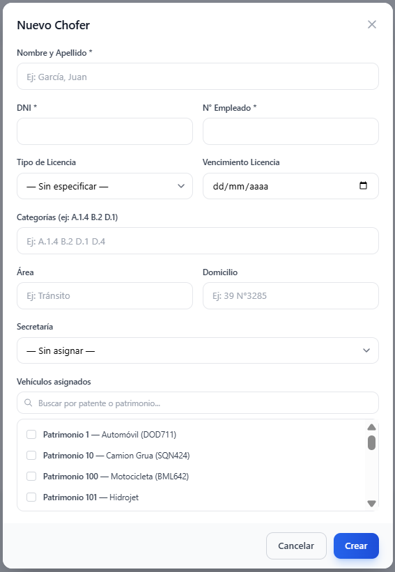
9. Empleados
Gestión básica de empleados locales del sistema.
Ver empleados
Tabla con: Legajo (etiqueta azul), Apellido, Nombre y botones de acciones.
Crear / Editar un empleado
Campos del formulario:
- Legajo (obligatorio)
- Apellido (obligatorio)
- Nombre (obligatorio)
📸
Captura de pantalla
Pantalla de Empleados mostrando la tabla y el modal de creación/edición
Nota: Este módulo gestiona empleados locales. Los empleados municipales del sistema INASI aparecen como opción de destino al realizar asignaciones de insumos o maquinarias (ver secciones 13 y 14).
10. Eventos
Gestiona eventos programados como actos, festividades, operativos municipales, etc.
Ver eventos
| Columna | Descripción |
|---|
| Evento | Nombre del evento |
| Fecha | Fecha programada |
| Ubicación | Lugar del evento |
| Secretaría | Secretaría organizadora |
| Anual | Sí si se repite cada año, No si no |
Crear / Editar un evento
- Evento (obligatorio): Nombre del evento.
- Fecha (obligatorio): Fecha programada.
- Ubicación (obligatorio): Lugar.
- Secretaría: Seleccione de la lista (opcional).
- Evento Anual: Marque si se repite cada año.
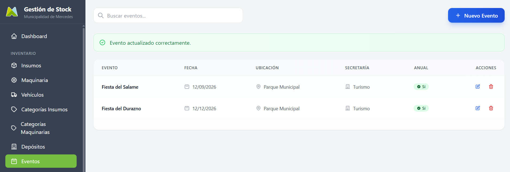
11. Depósitos
Los depósitos son subdivisiones dentro de cada corralón. Representan ubicaciones físicas donde se almacenan insumos, maquinarias y vehículos.
Ver depósitos
Tabla con: ID, Depósito (nombre), Corralón, Ubicación y acciones. Si tiene acceso a múltiples corralones, aparece un filtro selector de corralón.
Crear / Editar un depósito
- Depósito (obligatorio): Nombre descriptivo.
- Corralón (obligatorio): Seleccione a qué corralón pertenece.
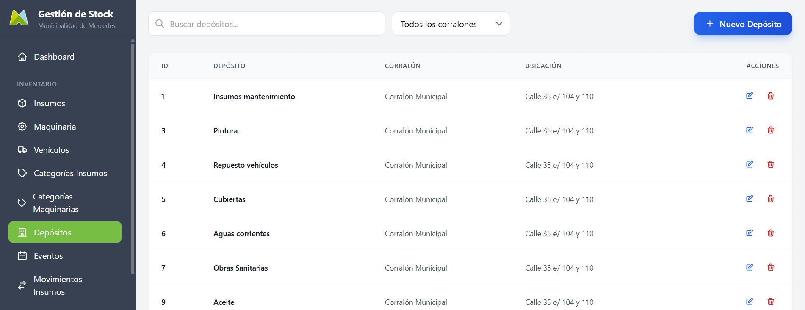
12. Categorías de Insumos y Maquinarias
Estas secciones permiten organizar los insumos y las maquinarias en categorías para facilitar su clasificación y búsqueda. Ambas pantallas funcionan de la misma manera.
Ver categorías
Tabla con: ID, Nombre, Descripción (truncada a 60 caracteres) y acciones.
Crear / Editar una categoría
- Nombre (obligatorio): Nombre de la categoría.
- Descripción (opcional): Texto descriptivo.
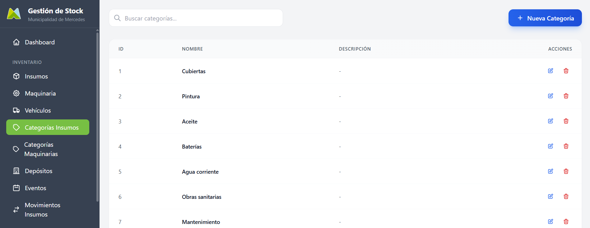
13. Movimientos de Insumos
Esta es una de las secciones más importantes del sistema. Aquí se registran todos los movimientos que afectan el stock de los insumos: entradas, salidas, transferencias entre depósitos y asignaciones a vehículos, eventos o empleados.
Pantalla principal
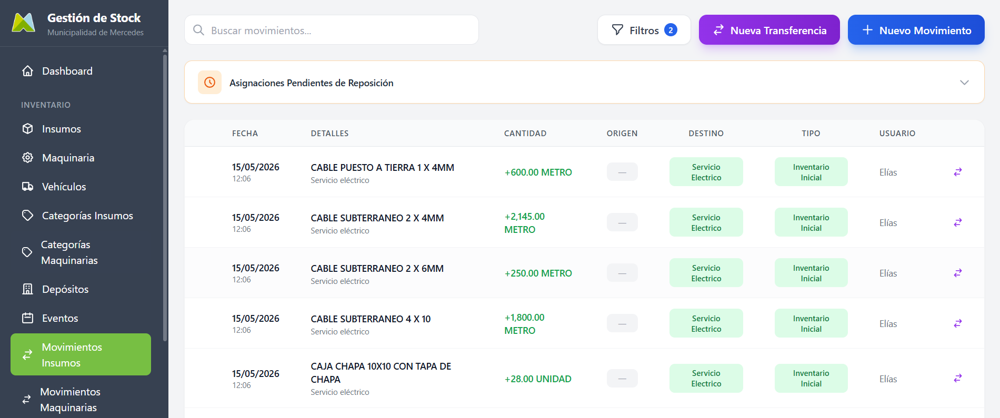
La tabla muestra todos los movimientos registrados:
| Columna | Descripción |
|---|
| Fecha | Fecha y hora del movimiento |
| Detalles | Nombre del insumo (haciendo clic se abre el modal de nuevo movimiento con ese insumo preseleccionado). Para transferencias múltiples muestra una etiqueta con la cantidad de insumos |
| Cantidad | Cantidad movida, con flecha verde (entrada) o roja (salida) |
| Origen | Depósito de origen (etiqueta roja) |
| Destino | Depósito destino o entidad asignada (etiqueta verde) |
| Tipo | Tipo de movimiento (etiqueta con color según tipo) |
| Usuario | Usuario que registró el movimiento |
Consejo: Las transferencias con múltiples insumos se pueden expandir haciendo clic en la flecha a la izquierda de la fila para ver el detalle de cada insumo incluido.
Filtrar movimientos
Haga clic en "Filtros" para acceder a:
- Fecha Desde / Fecha Hasta: Rango de fechas.
- Depósito: Filtrar por depósito.
- Tipo de Movimiento: Filtrar por tipo específico.
- Usuario: Filtrar por quien registró el movimiento.
- Insumo: Buscar por nombre de insumo.
- Categoría: Filtrar por categoría del insumo.
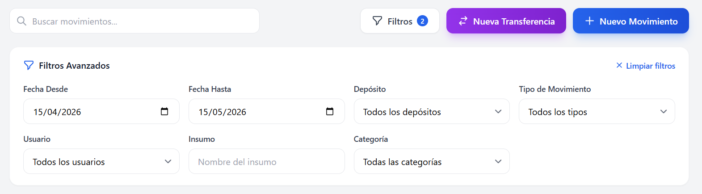
Crear un movimiento individual
Los movimientos individuales registran entradas, salidas y asignaciones de un insumo.
- Haga clic en "Nuevo Movimiento" (botón azul).
- Paso 1 — Seleccionar Insumo: Busque por nombre y seleccione el insumo de la lista.
- Paso 2 — Tipo de Movimiento: Elija la operación a realizar (ver tabla abajo).
- Paso 3 — Completar datos: Ingrese la cantidad y datos adicionales según el tipo elegido.
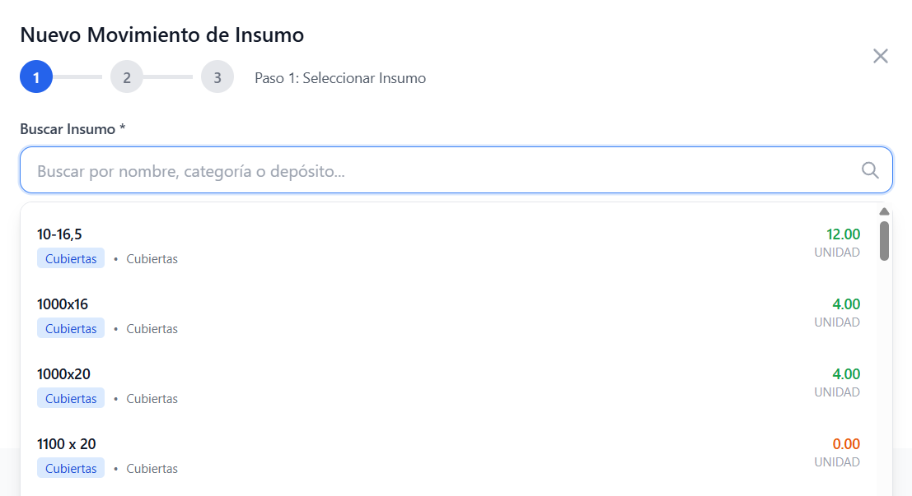
Tipos de movimiento disponibles
| Tipo | Efecto en Stock | Descripción |
|---|
| Carga de Stock | Suma | Ingreso de mercadería nueva al depósito |
| Ajuste Positivo | Suma | Corrección de inventario a favor |
| Inventario Inicial | Suma | Registro de stock al iniciar el sistema |
| Devolución | Suma | Devolución de material |
| Ajuste Negativo | Resta | Corrección de inventario en contra |
| Asignación con Reposición | Resta | Salida temporal: se espera devolución |
| Asignación sin Reposición | Resta | Salida definitiva: no se espera devolución |
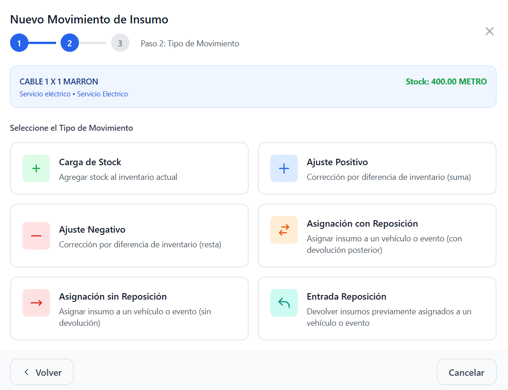
Paso 3 según el tipo de movimiento
Para Carga de Stock y Ajuste Positivo:
- Cantidad: Unidades a ingresar.
- N° Orden de Compra (opcional): Número de la orden de compra o suministro.
- Comprobantes (opcional): Adjunte hasta 5 archivos (PDF, JPG o PNG, máximo 5 MB cada uno) como respaldo documental.
Para Asignaciones (con o sin reposición):
- Tipo de destino: Seleccione Vehículo, Evento o Empleado.
- Buscar y seleccionar el registro de destino.
- Cantidad: Unidades a asignar.
Atención: La "Asignación sin Reposición" solo permite como destino Vehículos y Eventos. No se pueden asignar insumos sin reposición a empleados.
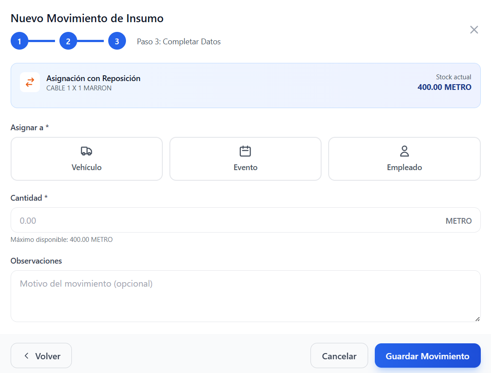
Crear una transferencia
Las transferencias mueven insumos de un depósito a otro, incluso entre corralones distintos.
- Haga clic en "Nueva Transferencia" (botón violeta).
- Seleccione el Corralón y Depósito de origen.
- Seleccione el Corralón y Depósito de destino.
- Ingrese la Fecha y Observaciones (opcional).
- Agregue insumos a transferir: seleccione el insumo de la lista e ingrese la cantidad. Puede agregar múltiples insumos en una sola transferencia.
- Confirme la transferencia.
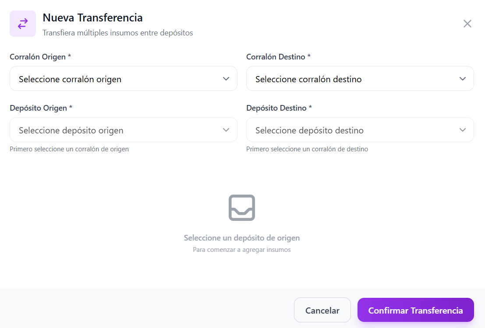
Atajos rápidos
Atajo 1 — Nuevo movimiento preseleccionado: Haga clic en el nombre del insumo en cualquier fila de la lista de movimientos. Se abrirá el modal de "Nuevo Movimiento" con ese insumo ya seleccionado, saltando directamente al Paso 2.
Atajo 2 — Nueva transferencia desde movimiento: Haga clic en el botón con flechas en una fila de la lista. Se abrirá el modal de transferencia tomando como origen el depósito destino del movimiento seleccionado y precargando los mismos insumos.
Panel de Asignaciones Pendientes de Reposición
Encima de la lista de movimientos hay un panel colapsable (botón naranja: "Asignaciones Pendientes de Reposición") que muestra todas las asignaciones con reposición que aún no fueron devueltas ni dadas de baja.
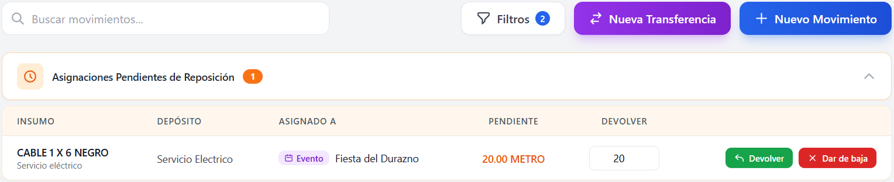
Cada fila del panel muestra:
- Insumo y depósito.
- Asignado a: Vehículo, Evento o Empleado (con nombre e identificación).
- Pendiente: Cantidad pendiente de devolución.
- Campo de cantidad: Ingrese cuántas unidades devolver.
Acciones disponibles
| Acción | Botón | Efecto |
|---|
| Devolver |
Verde |
Registra una devolución (Entrada Reposición). El stock del insumo sube. Debe ingresar la cantidad a devolver. |
| Dar de baja |
Rojo |
Cancela la pendencia sin devolver el material (Baja Reposición). El stock no se modifica. Se pide confirmación antes de ejecutar. |
Ejemplo de uso: Se asignaron 10 litros de aceite a un vehículo "con reposición". El chofer devuelve 7 litros. Usted ingresa 7 en el campo de cantidad y hace clic en "Devolver". Quedan 3 litros pendientes. Si determina que esos 3 litros ya se consumieron y no se devolverán, hace clic en "Dar de baja" para cerrar la pendencia.
Comprobantes adjuntos
Los movimientos de tipo Carga de Stock y Ajuste Positivo permiten adjuntar comprobantes (órdenes de compra, recibos, facturas) como respaldo documental.
- En la lista de movimientos, los que tienen comprobantes muestran un ícono de clip.
- Haga clic en el ícono para ver los archivos adjuntos en un desplegable.
- Puede ver cada archivo (se abre en el navegador) o descargarlo.
- Si el movimiento tiene un N° de Orden de Compra, se muestra como "OC: ..." debajo del tipo de movimiento.
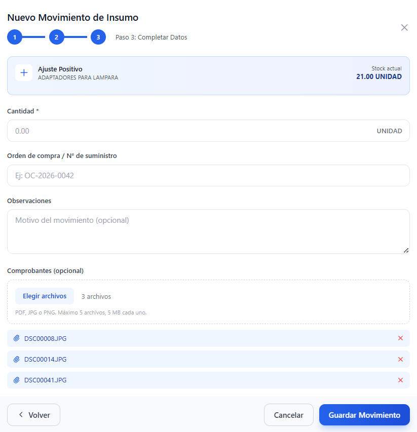
14. Movimientos de Maquinarias
Funciona de manera similar a los Movimientos de Insumos, adaptado para el control de maquinarias.
Pantalla principal
Lista de movimientos con: Fecha, Maquinaria (nombre y categoría), Cantidad (con indicador de entrada/salida), Origen, Destino, Estado, Tipo y Usuario.
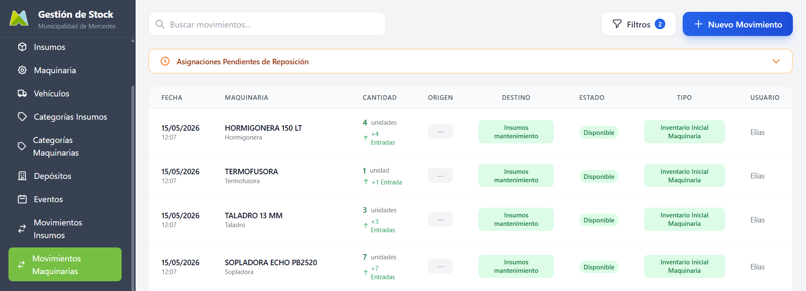
Filtros disponibles
Mismos filtros que Movimientos de Insumos: Fecha Desde/Hasta, Depósito, Tipo de Movimiento, Usuario, Maquinaria (búsqueda por nombre) y Categoría.
Crear un movimiento de maquinaria
- Haga clic en "Nuevo Movimiento".
- Seleccione la maquinaria.
- Elija el tipo de movimiento.
- Complete los datos (cantidad, destino, etc.).
Tipos de movimiento de maquinarias
| Tipo | Efecto | Descripción |
|---|
| Carga de Stock | Suma | Ingreso de maquinaria nueva |
| Inventario Inicial Maquinaria | Suma | Registro de stock inicial |
| Devolución | Suma | Devolución de maquinaria |
| Entrada Reposición Maquinaria | Suma | Devolución de asignación con reposición |
| Asignación Maquinaria con Reposición | Resta | Salida temporal, se espera devolución |
| Asignación Maquinaria sin Reposición | Resta | Salida definitiva |
| Mantenimiento Maquinaria | Resta | Envío a mantenimiento |
| Transferencia Salida Maquinaria | Resta | Traslado a otro depósito (salida) |
Atención: Al igual que con insumos, la "Asignación Maquinaria sin Reposición" solo permite como destino Vehículos y Eventos (no empleados).
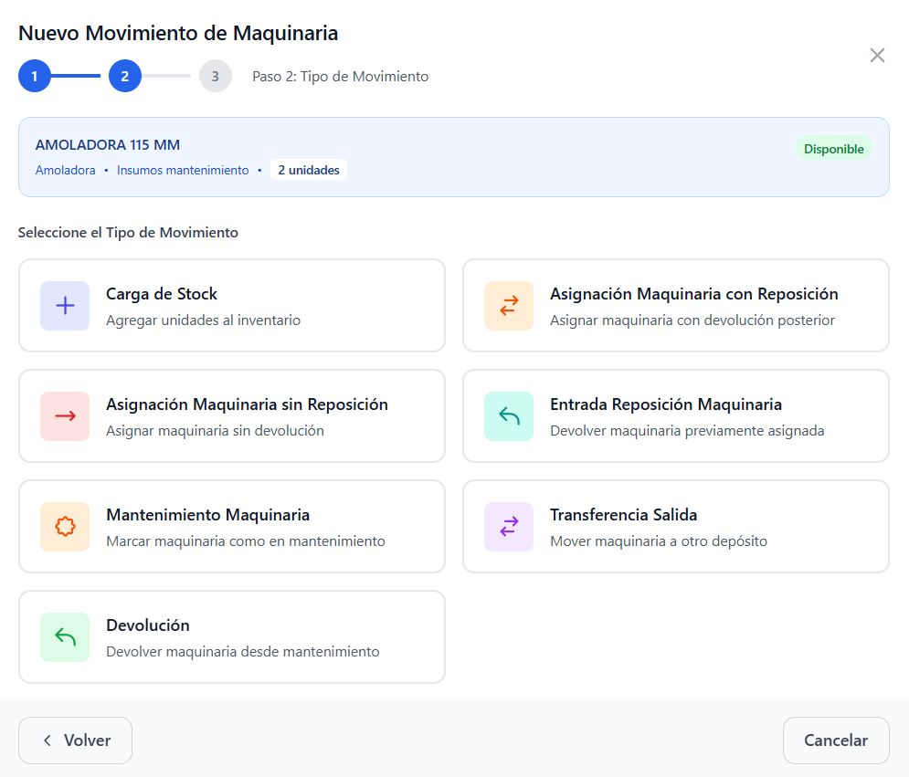
Panel de Asignaciones Pendientes (Maquinarias)
Funciona igual que el panel de insumos. Muestra maquinarias asignadas con reposición que están pendientes de devolución.
- Devolver (botón verde): Registra la devolución. El stock sube.
- Dar de baja (botón rojo): Cancela la pendencia. El stock no se modifica.
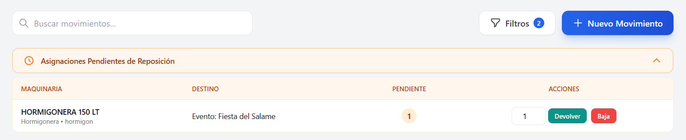
15. Administración de Usuarios y Permisos
Esta sección permite gestionar los usuarios del sistema y configurar sus permisos de acceso de forma granular. Solo accesible para usuarios con permiso en el módulo "Usuarios".
Ver usuarios
| Columna | Descripción |
|---|
| Nombre | Nombre completo (columna ordenable, haga clic en el encabezado) |
| Email | Correo electrónico (columna ordenable) |
| Rol | Rol asignado. Administrador se destaca en violeta |
| Permisos | Resumen: Acceso total para administradores; para otros roles muestra corralones con cantidad de módulos y módulos globales |
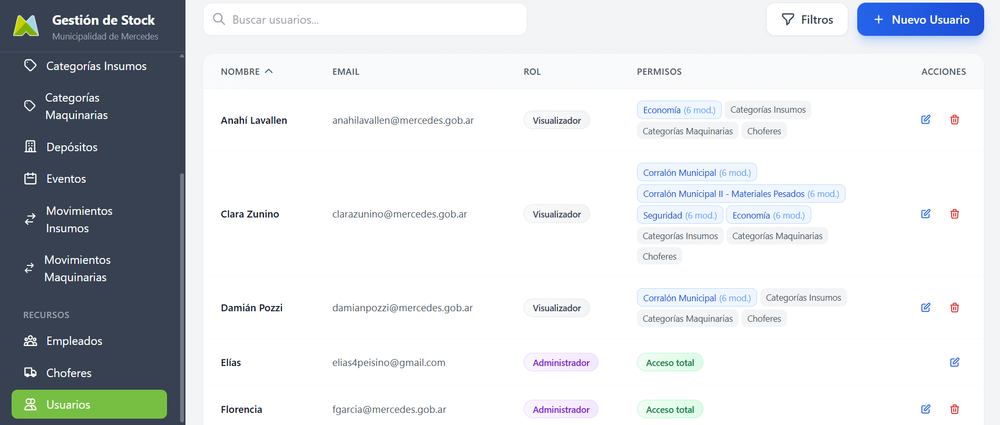
Filtros
- Rol: Filtrar por rol asignado.
- Tipo de Acceso: Todos / Administradores / Acceso limitado.
- Corralón: Filtrar por corralón asignado.
Crear / Editar un usuario
- Haga clic en "Nuevo Usuario" o en el botón editar de la fila.
- Complete los datos básicos: Nombre y Email.
- Seleccione el Rol: cada rol se presenta como una tarjeta con nombre y descripción.
- Ingrese la contraseña (al crear es obligatoria; al editar, déjela en blanco para mantener la actual).
- Si el rol NO es Administrador, configure los permisos (ver abajo).
- Haga clic en "Crear Usuario" o "Guardar Cambios".
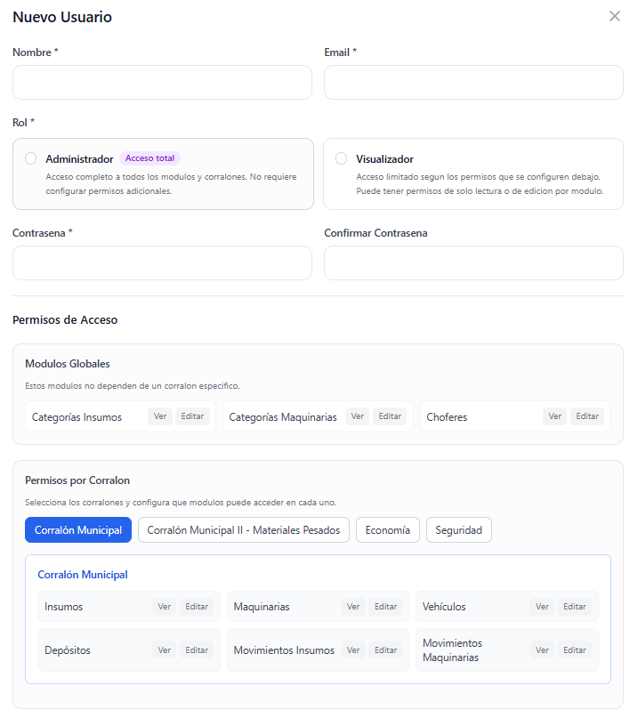
Configuración de permisos
Si el usuario tiene un rol distinto a Administrador, aparece la sección "Permisos de Acceso" con dos paneles:
Módulos Globales
Son módulos que no dependen de una ubicación específica:
| Módulo | Descripción |
|---|
| Empleados | Gestión de empleados locales |
| Choferes | Gestión de conductores |
| Eventos | Gestión de eventos |
| Categorías Insumos | Categorías para insumos |
| Categorías Maquinarias | Categorías para maquinarias |
| Usuarios | Administración de usuarios |
Para cada módulo, puede configurar:
- Ver: El usuario puede consultar datos pero no crear, editar ni eliminar.
- Editar: El usuario puede realizar todas las operaciones (crear, editar, eliminar).
- Sin seleccionar: El usuario no tiene acceso al módulo (no aparece en su menú).
Permisos por Corralón
Permite asignar acceso a módulos específicos dentro de cada corralón:
- Seleccione los corralones a los que el usuario tendrá acceso (botones azules que se activan/desactivan).
- Para cada corralón seleccionado, configure los módulos disponibles:
- Insumos
- Maquinarias
- Vehículos
- Depósitos
- Movimientos Insumos
- Movimientos Maquinarias
- Cada módulo puede ser Ver (solo lectura) o Editar (lectura y escritura).
Ejemplo práctico: Un usuario "Operador" podría tener configurado:
• Módulos globales: Ver Empleados, Ver Choferes
• Corralón Central: Editar Insumos, Editar Movimientos Insumos, Ver Maquinarias
• Corralón Norte: Ver Insumos
Este usuario podrá gestionar insumos y movimientos solo en el Corralón Central, consultar maquinarias del Central y solo ver insumos del Norte.
Importante: Los usuarios con rol Administrador tienen acceso total automático a todas las secciones y corralones. No es necesario (ni posible) configurar permisos individuales para administradores.
16. Preguntas Frecuentes
Acceso y navegación
No puedo ver alguna sección del menú
Su usuario no tiene permisos asignados para esa sección. Contacte al administrador del sistema para solicitar acceso.
Los datos que veo parecen incompletos
El sistema filtra automáticamente los datos según los corralones y depósitos a los que usted tiene acceso. Si necesita ver más datos, solicite permisos adicionales al administrador.
Olvidé mi contraseña
Contacte al administrador del sistema. Él puede editar su usuario y asignarle una nueva contraseña.
Insumos y stock
¿Cómo agrego stock a un insumo?
Vaya a Movimientos Insumos → Nuevo Movimiento → seleccione el insumo → elija "Carga de Stock" → ingrese la cantidad. El stock se actualiza automáticamente.
¿Puedo modificar el stock directamente?
No. El stock se calcula automáticamente a partir de los movimientos registrados. Esto garantiza la trazabilidad completa de todas las operaciones. Si necesita corregir el stock, use "Ajuste Positivo" o "Ajuste Negativo".
¿Qué significa "Stock bajo mínimo"?
Significa que la cantidad actual del insumo está por debajo del nivel mínimo configurado. Aparece como alerta en el Dashboard y se resalta en rojo en la lista de insumos.
¿Qué diferencia hay entre "Asignación con Reposición" y "sin Reposición"?
La con reposición es una salida temporal — se espera que el material se devuelva (aparece en el panel de Asignaciones Pendientes). La sin reposición es una salida definitiva — no se espera devolución.
Transferencias
¿Puedo transferir múltiples insumos a la vez?
Sí. Use el botón "Nueva Transferencia" (violeta) para crear una transferencia con varios insumos en una sola operación.
¿Qué hace el botón de flechas en la lista de movimientos?
Permite crear rápidamente una nueva transferencia tomando como origen el destino del movimiento seleccionado y precargando los mismos insumos. Es útil para reenviar materiales que acaban de llegar.
Vehículos
¿Cómo veo los documentos de un vehículo?
En la tabla de vehículos, haga clic en el botón de documentos (ícono de documento con número) en la fila del vehículo. Se abre una ventana con todos los documentos adjuntos.
¿Qué significan los colores en el vencimiento de VTV?
Rojo = ya vencida. Naranja = vence en menos de 7 días. Amarillo = vence en menos de 30 días.
Usuarios y permisos
¿Puedo eliminar mi propio usuario?
No. El sistema no permite que un usuario se elimine a sí mismo por seguridad.
¿Qué pasa si asigno el rol Administrador?
Los administradores tienen acceso total a todas las secciones y todos los corralones automáticamente. No es necesario ni posible configurar permisos individuales para este rol.
Un usuario no puede ver datos de un corralón
Verifique que en la sección de permisos del usuario se haya seleccionado el corralón correspondiente y se hayan activado los módulos necesarios con nivel "Ver" o "Editar".